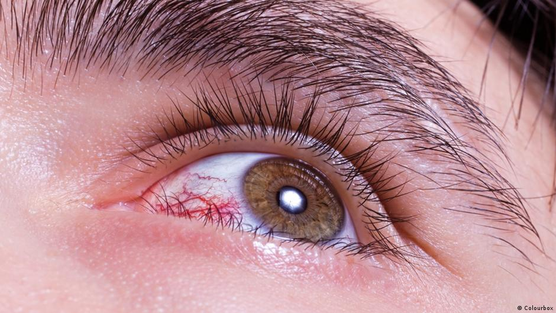

مقالات •
التخلص من إنسداد الأوردة •
مناقشات
الوذمة وآلام العضلات والمغص: 3ـ دلالات على انسداد الأوردة. كيف يمكنك أن تنظف هذه الأوردة بنفسك في المنزل؟
من هو ألد أعداء الكوليسترول والجلطات وأفضل صديق للأوردة؟
مشاكل الأوعية الدموية و الدوالي في الساقين شيء مزعج للعديد من الناس و خصوصاً النساء .
هل تؤلمك قدمك في المساء؟ هل هناك انتفاخ في باطن قدميك، وهل توجد بقع على كاحليك؟ قد تكون هذه علامات على وجود وزمة في الأوردة مما يعني وجود عوائق على في جدران الوريد. بما أن الوذمة تؤثر سلبًا على الدورة الدموية ، فإنها تسبب آلامًا وتشنجات في العضلات.
يعلم الجميع أن النوبة القلبية هي نتيجة انسداد الأوردة بسبب الكوليسترول.و أيضاً الكوليسترول يسبب مشاكل القلب والأوعية الدموية. لكن قلة من الناس يدركون أن هذا مجرد غيض من فيض. الأوردة المسدودة هي سبب أساسي لوجود مشاكل بالقلب و تعتبر غير قابلة للشفاء.
آلام الرأس وتقلبات ضغط الدم. تتألم مفاصلك، ولا يمكنها تحمل وزنك ، وبالكاد تستطيع أن تدير رقبتك أو تثنيها. في المساء تتضخم رجليك و وجهك في الصباح. أذنيك مصابة بطنين . تصبح يديك وأصابعك مخدرة. قدميك دائما باردة. تبدأ في المعاناة من اضطرابات بصرية. ذاكرتك تزداد سوءًا. لا يمكنك أن تجد الطاقة لفعل أي شيء. كثير من الناس يعرّفون هذا على أنه تقدم في السن ولكن هذا ليس صحيحًا.
- لماذا الأوردة مسؤولة عن 90٪ من صحتك؟
- ما الأشياء الأخرى التي تسبب تلوث في جدران الأوردة بخلاف الكوليسترول؟
- 4 علامات واضحة و 7 علامات خفية للأوردة غير الصحية
- كيف يمكنك تنظيف أوردتك بأمان في المنزل؟
حصلنا على إجابات لهذه الأسئلة من الطبيبة الروسية الشهيرة إيلينا أناتوليفنا .
تمتلك الدكتورة إيلينا موهبة في شرح الإجراءات الأكثر تعقيدًا بكلمات بسيطة يمكن للجميع فهمها. لديها العديد من الإرشادات الصحية التي ستعطيها لنا اليوم . إنها تعتقد أن الأوردة مسؤولة عن 90٪ من صحتنا وأن صحتنا العامة تعتمد على مدى نظافة الأوردة.
المراسلة إيلينا : لماذا تمثل الأوردة 90٪ من صحتنا؟
عزيزتي دكتورة إيلينا لقد ذكرتي مرات عديدة أن الأوردة في أجسامنا مسؤولة عن 90٪ من صحتنا. هل يمكنك شرح سبب ذلك؟
ما هو اكبر عضو في جسم الانسان؟ قلة من الناس يعرفون الإجابة على هذا. حتى الأشخاص الذين درسوا الطب يردون أحيانًا بشكل خاطئ و يقولون الدماغ أو الكبد. قد يقول البعض منهم الأكثر حكمة أنه الجلد. في الواقع أكبر عضو في جسم الإنسان هو نظام الأوعية الدموية.
طول الاوعية الدموية يمكن أن يلف الكوكب مرتين ونصف
سيكون نظام الأوعية الدموية لشخص واحد فقط كافيًا لذلك.
حاول أن تتخيل. إذا أضفنا جميع الأوردة في جسم الإنسان وقمنا بجمعها معًا ، يكون طولها هو 100 ألف كيلومتر.
لتوضيح الفكرة ببساطة طول خط الاستواء 40 ألف كيلومتر. يمكن للحبل الكامل الذي يتكون من عروق إنسان أن يسافر حول العالم مرتين.
في رأيك ماذا عن هذا الرقم؟
الأوردة ليست مجرد قنوات يتدفق الدم من خلالها. إنه عضو فريد ومعقد. أي اضطراب قد يتسبب في إصابة الجسم بالعديد من المشاكل .
انسداد الأوردة في الدقم يؤدي إلى : الدوالي ، تورم القدمين ، الشعور بالثقل ، الشعور بالتجمد في الساقين أو على العكس من ذلك الشعور بالحرقان في باطن القدم. تشققات الجلد. اضطرابات الدورة الدموية: الحماية من هدم البكتيريا ، الفطريات. تصبح الأظافر أكثر سمكا وشكلها يفسد.
عند انسداد الأوردة التي تغذي الكبد:
تنكس ذهني كبدي عندما تأكل طعامًا زيتيًا ، فإنه يترك طعمًا مرًا في الفم.
عندما تفقد الأوردة في المفاصل قوتها وتنسد: تجف أنسجة الغضروف. تبدأ المفاصل في الشعور بالألم ويتطور تنخر العظم والفتق.
تفقد الأوردة المعوية مرونتها: تتطور العقد الباسورية.
خلل الأوعية في العين:

تسبب ضعف الرؤية. إعتام عدسة العين. العيون الحمراء ، التي دائما ما نظن انها بسبب الإرهاق ، هي في الواقع نزيف دقيق ، تشققات في الشعيرات الدموية الصغيرة للعينين. اضطرابات الدورة الدموية في الدماغ :
الدوخة وطنين الأذن وفقدان الذاكرة. هل سبق لك أن ذهبت إلى المطبخ ونسيت ما تحتاجه هناك؟ أو عدم القدرة على تذكر كلمة. هذه علامات على تدهور حالة أوعية الدماغ.
نحتاج أيضًا إلى إضافة ضغط الدم المرتفع في هذه القائمة. ارتفاع ضغط الدم هي أساس النوبة قلبية.
الأوردة هي مصدر طاقتنا ، وتمر فيها قوة الحياة. إذا تم إنسداد واحدة منهم ، تتوقف الحياة.
في حالة ان الاوردة مسدودة : جميع الأعضاء تتضور جوعا
الوزن الزائد
المرتبط مباشرة بالأوعية الدموية. تؤدي الأوعية الدموية المسدودة بالكوليسترول إلى تجويع الأعضاء ولا توفر الكمية اللازمة من العناصر الغذائية. يرسل المخ الرسالة: "يجب أن تأكل". فتذهب تلقائياً انت لتأكل. لكن الأعضاء ما زالت لا تتلقى الكمية المطلوبة من العناصر الغذائية بسبب انسداد الأوعية الدموية. يخبره المخ مرة أخرى أنه يجب أن يأكل ، وهذا يتكرر إلى ما لا نهاية.
تنبع الرغبة في تناول الحلويات والمعجنات من مشكلة إنسداد الأوعية الدموية .لأن جسمك يحتاج إلى سعرات حرارية.
عندما يقولون لك "أنت مصاب بإرتفاع ضغط الدم بسبب وزنك الزائد" ، يخلط الأمر بين علاقة السبب والنتيجة. ارتفاع ضغط الدم لا يتطور نتيجة الوزن الزائد والعكس صحيح.
يقولون "الصحة تأتي أولاً" لسبب وجيه ولكن يجب أن نضيف هذا: "لا يمكننا أن نكون أصحاء إذا لم نحافظ على نظافة أوعيتنا الدموية و أوردتنا ".
لهذا السبب أستمر في قول نفس الشيء: إذا كنت تريد أن تعيش حياة طبيعية ، فعليك أن تحافظ على صحة عروقك. تنظيف الأوعية الدموية يحميك
ضد 90٪ من المشاكل الصحية .
إلى جانب الكوليسترول ، ما الذي يسد الأوردة أيضًا؟
نعلم جميعًا مدى خطورة الكوليسترول. يسد الأوردة ويضيق الممرات وبالتالي يمنع تدفق الدم. لكن الكوليسترول ليس هو الشيء الوحيد الذي يسبب ذلك.

6.1 كجم
هو الوزن الإجمالي للدهون المخزنة في عروق الإنسان عند بلوغه الخمسين.
هذا صحيح. تعتبر لويحات الكوليسترول أو "لويحات تصلب الشرايين" سببًا لاضطرابات الأوعية الدموية بنسبة كبيرة .
كل شخص يخزن حتى
5 كيلوغرامات من طبقات الكوليسترول في جسمه عندما يصل إلى عمر الخمسين. يضيق الكوليسترول المخزن تجويف الأوعية الدموية (المساحة الفارغة داخل الأوردة حيث يتدفق الدم) 4-5 مرات أكثر.
حاول أن تتخيل. إذا قلنا أن عرض الأوعية الدموية للإنسان بنفس حجم الإصبع تقريبًا ، داخل الوريد الذي يتم حظره بمقدار 5 كيلوغرامات من الكوليسترول ، فإن عرض المساحة الفارغة حيث يمكن أن يتدفق الدم من خلاله يكون حوالي 4 أعواد الثقاب.
قد لا تحمل كإنسان طبقات الكوليسترول هذه حيويًا ولكن جودة الحياة لديك ستقل ، ويزيد ضغط الدم ، ويحدث ألم في الرأس ، وآلام في الظهر وخدر. الملوثات التي تتراكم داخل الأوردة أكثر خطورة.
الخثارة التي تتراكم داخل الأوردة أخف بكثير ، فهي "فقط" 800 جرام إلى 1 كجم. لكن بسبب هيكلها غير المستقر فهي خطيرة للغاية. يمكن أن تنفصل الجلطة (الخثارة التي تسد الوريد) عن جدار الوريد العالق بها وتبدأ في البحث عن ضحية في أي لحظة.
قطع الجلطات الكبيرة يمكن أن تسد وريد ضحاياهم تمامًا. في مثل هذه الحالة ، لا تستطيع الأنسجة الحصول على كمية كافية من الدم.
نوبة نقص التروية هي انسداد الوريد الدماغي. النوبة القلبية هي انسداد وريد القلب. يتطور نقص تروية الكبد وفشل الرئة والفشل الكلوي بسبب هذا. البواسير هي عبارة عن نقص التروية يحدث على حافة المستقيم. يمكن أن يؤدي انسداد الشعيرات الدموية أيضاً على القدمين إلى نخر (الغرغرينا).
المكملات الغذائية والمخلفات الكيميائية تسبب تراكم ملح الكالسيوم في الأوردة. الشخص يخزن 300-400 جرام في 50 سنة. تتراكم أملاح الكالسيوم أكثر في الدماغ.
نظرًا لتركيبها البلوري ، فهي خطيرة. إنها تضيق الأوردة وإذا كانت الأوردة تعاني من تشنج بسبب الإجهاد أو الحركة الجسدية أو التغيير في الهواء ، يمكن للحواف البلورية الحادة حفر الوريد. يُعرف حفر الوريد الدماغي بالسكتة الدماغية النزفية.
4 علامات واضحة و 7 علامات خفية للأوردة غير الصحية
ما هي الأعراض التي تدل على انسداد عروقنا؟
إذا كان عمرك يزيد عن 45 عامًا ولم تستخدم أي مكملات غذائية لتنظيف عروقك ، يمكنني القول إن لديك مشكلة.
45
سن 45 هو علامة فارقة لتنظيف عروقك.
انسداد الأوردة بالكوليسترول والملوثات الاخرى هو نتيجة طبيعية للشيخوخة. إن الغذاء والتدخين وتناول الكحول و التلوث البيئي في الوقت الحاضر يزيد من هذه العملية بمقدار 5-8 مرات. هذا هو واقع عالم اليوم ولا يمكن إنكاره.
أهم أعراض تلوث الأوردة
إذا تم تشخيصك بارتفاع ضغط الدم ، فقد تتوقف عن قراءة هذا المقال لأنه يعني أن لديك مشاكل بالأوعية الدموية.

هل تعاني من تقلبات ضغط الدم؟ هل ضغط دمك مرتفع باستمرار إذا كانت إجابتك على هذه الأسئلة بنعم ، فهذا يعني أن لديك مساحة خالية بنسبة 30 ٪ داخل عروقك للدوران في الدم. تمتلئ بقية عروقك بلويحات الكوليسترول وخثارة الدم وملح الكالسيوم.
لذلك ، حتى أقل قدر من الإجهاد يمكن ان ينهكك ، في مثل هذه الحالة سيرتفع ضغط دمك ، وتبدأ قلبك في النبض أكثر.
4 مشاكل تسببها الأوردة المسدودة
- 1. ارتفاع الضغط (ضغط الدم المرتفع) ارتفاع ضغط الدم أو عدم استقراره مما يتطلب منك تقليل الجهد و العصبية . هل تم تشخيصك بارتفاع ضغط الدم؟ الاوعية الدموية تنتظر التنظيف!
- 2. توسع الأوردة
أوردة منتفخة وسيئة المنظر في الساقين ، شعور بثقل وألم ، انتفاخ. يسد الكوليسترول المتبقي والجلطات الدموية الصمامات الوريدية. تظهر "العلامات النجمية" الوعائية تدريجياً ، لتصبح في النهاية "شبكة" وعائية. هذه هي الطريقة التي تتطور بها الدوالي.
- 3. البواسير
يؤدي انسداد الأوعية الدموية في المستقيم إلى تضخم البواسير. وتساهم الترسبات من الأوعية الدموية التي تغذي الدم في حدوث الشقوق الشرجية.
- 4. تنخر العظم
ضعف الدورة الدموية في الغضروف. يتصلب الغضروف ويهترئ ، وليس لديهم الوقت للتعافي. لا تتجدد ولا تجف. يفقدون خصائص امتصاص الصدمات. لا تُغسل الأملاح وتتراكم دون حسيب ولا رقيب.
7 أعراض خفية
- الوذمة لا تستطيع الأوعية الدموية المسدودة ضخ الدم. ضعف عملية التمثيل الغذائي للمحاليل الملحية. في الليل ، تكون الأرجل متورمة لدرجة أن الجوارب تترك علامات عميقة على الكاحلين. انتفاخ الوجه وانتفاخات تحت العينين. لا يمكن إزالة الخواتم من الأصابع. التورم هو علامة على تورم الأعضاء الداخلية.
- طنين من الأصوات الخافتة إلى العواء العالي الذي يجعل من الصعب التركيز. ويرجع ذلك إلى زيادة الضغط في أوعية الدماغ التي تعمل على طبلة الأذن.
- دوار الشعور "بالتسمم" ، والهجمات المفاجئة للدوخة تشير إلى أن الجهاز المناعي يتضور جوعا. غالبا ما يصاحبها ضعف في السمع.
- أرق هل تشعر بالنعاس والتعب ولا تستطيع النوم حتى منتصف الليل؟ هذا بسبب نقص إمدادات الدم إلى الغدة النخامية. توقف عن إنتاج الميلاتونين ، هرمون النوم.
- نقص القدرة على التحمل تشعر بنقص الطاقة. أنت لست في حالة مزاجية على الإطلاق. أنت فقط تريد الاستلقاء على السرير وتناول الطعام. يحدث هذا عندما يبدأ الجسم في الحفاظ على الطاقة. تمنع الأوعية الدموية المسدودة نقل العناصر الغذائية التي تحتاجها الأعضاء ويقلل الجسم من نشاطه إلى الحد الأدنى.
- اضطرابات بصرية بقع أمام العينين ، تشوش الرؤية. أعراض تلف العين.
- ألم المفاصل
 آلام المفاصل عندما يتغير الطقس. في الصباح ، بدلاً من الاستيقاظ بهدوء ، تشعر وكأنك شخص معاق شبه مشلول ، تتألم عظامك. يستغرق وقتًا للتخلص من الخدر. وذلك لأن السائل الزليلي يفقد خصائصه.
آلام المفاصل عندما يتغير الطقس. في الصباح ، بدلاً من الاستيقاظ بهدوء ، تشعر وكأنك شخص معاق شبه مشلول ، تتألم عظامك. يستغرق وقتًا للتخلص من الخدر. وذلك لأن السائل الزليلي يفقد خصائصه.
هل لديك اي من هذه الأعراض؟ إذا كانت إجابتك بنعم، فإن عروقك تخبرك أن الوقت قد حان لتنظيفها.
عادة ما يكون لدى الأشخاص أكثر من واحد من هذه الأعراض في نفس الوقت. قد يكون لدى نفس الشخص العديد منهم .
يحاول الأشخاص التخلص من كل مرض على حدة. يستخدمون منتجات التخلص من ضغط الدم ومرهم للدوالي على الساقين . وبالطبع الكثير من مسكنات الآلام ...
لذا فإنهم ينفقون أطنانًا من المال على هذه المنتجات عديمة الفائدة . لكن هناك سبب واحد فقط لمشاكل الأوعية الدموية: انه إنسداد الأوعية نفسها . في هذه المرحلة ، من الضروري البدء في التطهير الشامل لنظام الأوعية الدموية.
إذن ما الذي يمكنك استخدامه لتنظيف الكولسترول وبقايا الأملاح في الأوردة؟
سأذكر لكم حلة قد شخصتها بنفسي . على سبيل المثال، كانت تعاني إمرأة بالغة من العمر 57 عامًا والتي تعاني من زيادة الوزن وارتفاع ضغط الدم ومشاكل الدوالي.
كيف تكمنت من مساعدة هذه المرأة ؟ كيف طهرت عروقها؟ لا تريد سماع عبارات مثل "أنت بحاجة إلى إنقاص الوزن" أو "تحتاج إلى ممارسة الرياضة" أو "تحتاج إلى تناول طعام صحي" أو "تحتاج إلى أن تعيش بحذر أكبر في هذا العمر".
معظم المنتجات للتخلص من مشاكل الأوردة ليس لها أي فائدة سوى إفراغ حسابك المصرفي وجعلك تشتريها بشكل دوري .
هناك منتج واحد فقط يمكنني القول أنه ينظف الأوردة بأمان: انه المكمل الغذائي CORDIS . إنه يمنحك الطاقة والشعور بالراحة، ويقيك من المعاناة ولا يكلف الكثير من المال .

إنها كبسولات طبيعية 100٪ ، آمنة تمامًا للجسم. لا يمكن مقارنة فعالية هذا المكمل الغذائي بأي من المنتجات الاخرى للأوعية الدموية . لكنه على عكس كل هذا لا يسبب مضاعفات ببساطة لانه طبيعي 100% . تعمل هذه الكبسولات على تنظيف الأوعية الدموية للإنسان بشكل مكثف - من الشرايين الكبيرة إلى أصغر الشعيرات الدموية وأكثرها هشاشة.
يتكون CORDIS من المكونات التي تنشط الجزيئات الحية. تدمر هذه المنظفات الدقيقة كل الكوليسترول والأملاح ولويحات الكالسيوم والملوثات العالقة على جدار الاوعية الدموية . لذلك فهو ينظف كل ما يمنع الدورة الدموية من الإستمرار .
يتم تنظيف جميع الملوثات التي تتراكم على مدى سنوات وتدمر حياتك عن طريق هذا المنتج الطبيعي CORDIS .
CORDIS ، يذوب ويزيل الكوليسترول في خلال فترة قصيرة جداً . يخفف كتلة الكوليسترول ويدمر أملاح الكالسيوم من 350-400 جرام.
بفضل هذا المكمل الغذائي ، فإن آلام رأسك وطنين الأذن يزول. يبدأ الدماغ في الحصول على التغذية الكافية ويعمل بسرعة الكمبيوتر الخارق. تصبح الأفكار أكثر وضوحا.
تصبح العواطف شديدة ، تبدأ في سماع الأصوات الهادئة التي لم تسمعها من قبل. تتحسن حاسة السمع ، يمكنك حتى متابعة المحادثة في الغرفة المجاورة التي لم تكن تسمعها سابقًا.
حاسة الشم
تصبح العطور حساسة. يختفي احتقان الأنف والتهاب الأنف المزمن والحساسية. يختفي السعال ، ويصبح التنفس سلسًا و سهلاً , الهواء النقي ، الذي يملأ الرئتين ، ينتشر عبر الجسم في موجات لطيفة ، مما يسبب شعورًا خفيفًا بالنشوة.
حاسة التذوق
أحاسيس التذوق أقوى وأعمق. حتى الطعام العادي هو متعة غير عادية. ستأكل أقل وتشعر بالشبع بشكل أسرع. سوف يختفي الإدمان على الأطعمة الحلوة والدسمة.
ستتخلص من ألام .
مفاصلك سوف تتحسن بأدائها كثيراً. لن يكون هناك المزيد من آلام المفاصل ، وبفضل تجديد الكولاجين ، ستكون الحركات أكثر سلاسة. إنه يشبه تغيير زيت المحرك في السيارة: فهو يستبدل السائل الأسود الذي يحتوي على قطع معدنية بزيت جديد واضح يوفر تزييتًا مثاليًا.
دعني أخبرك قصة عن نقص الثقة.
تم اختراع أول مضاد حيوي في عام 1928: لقد ساعد هذا المضاد الحيوي على التخلص من مشاكل عديدة مثل : الزحار والتيفوئيد اللذين يتسببون في مشاكل كبرى للكثير من الناس.
ومع ذلك ، لم يعتقد معظم الناس أن هذا المنتج سيفيدهم لأنهم استخدموا الآلاف من طرق غير المجدية قبله . لكن أولئك الذين عانوا من آلاف الإخفاقات ولكنهم ما زالوا لا يخشون المحاولة ،جربوه و نجح معهم . المجموعة الأولى من اللذين جربوه كانوا يفكرون في "انه منتج آخر غير مفيد" ودفعوا الثمن من خلال حياتهم. لكن الحل كان أمام أعينهم.
تمامًا هنا لدينا هذا المكمل الغذائي ، CORDIS سوف يساعدك في التخلص من مشاكل الأوعية الدموية.
أوافق على أن الشك هو العدو الأكبر. أنا شخصياً لا أتردد في تجربة أشياء جديدة.
لنتخيل أنني اشتريت CORDIS ، أفتح صندوقه وأخرجه و أستخدمه ... ثم ماذا يحدث؟ كيف يعمل CORDIS ؟
تأثير بيروكسيد (أكسدة ): ينتعش امتصاص الجزيئات بسبب الإثراء بالأكسجين.
في الواقع CORDIS يشبه اسطوانة الأكسجين بفضل الجزيئات الموجودة فيه. يفتح الطريق للدورة الدموية عن طريق تفجير لويحات الكوليسترول في الأوردة.
هذا المكمل الغذائي CORDIS .لديه تأثير مباشر على الأوعية الدموية و تنظيفها
يستغرق الأمر وقت قصير حتى لكي تعمل جزيئات خلاصة الأعشاب عندما تتفاعل مع الأكسجين وتنشط. سبب آخر يجعل CORDIS فعّالًا جدًا هو انه منتج مكون من منتجات طبيعية 100%
تأثير البيروكسيد
يضمن تأثير البيروكسيد الامتصاص الفوري للجزيئات الحية. تمتص المستخلصات النباتية المؤكسدة بسهولة عن طريق جدران المريء. لذلك فإن Cordis لا ينتج عنه حرقة أو مرارة أو تجشؤ أو تهيج للأمعاء أو يحمي المعدة. مناسب أيضًا للذين يعانون من مشاكل بالقلب .
إنه كنز يحتوي على خلاصات طبيعية تعمل بتناغم لتمنح الأوردة صفاءً ومقاومة.
الوذمة تختفي. حتى لو كان المرء يقف طوال اليوم ، لا تتورم الساقين.
تتحسن الدورة الدموية على الجلد. تختفي الأوردة العنكبوتية الظاهرة من الخارج. تذوب الدوالي في الوقت المناسب وتجف العقد الباسور.
یعد الكستناء الھندي خیار جید للمحافظة على صحة القلب والشرایین، فھو یساھم في خفض مستویات
الكولیسترول في الدم، وذلك بسبب الآتي : نسب الألیاف العالیة في الكستناء، حیث أن الألیاف تُساعد في خفض
مستویات الكولیسترول في الدم عن طریق الحد من امتصاصھ في الأمعاء .
الھاماملیس : تستخدم في التخلص من الإلتھابات وتحتوي على مضادات للأكسدة
مونوھیدرات اللاكتوز : تُساعد على نمو وتطوّر الكائنات الحیة الدقیقة الجیدة التي تعیش في الجسم
يخف الضغط الذي تشعر به على صدرك ، ويصبح التنفس أسهل. يعود معدل ضربات القلب إلى مستواه الطبيعي. تختفي أعراض عدم انتظام ضربات القلب والأوجاع المفاجئة في قلبك.
يقلل من خطر الإصابة بنوبة قلبية.
كل هذه المواد عندما تكون في منتج واحد ك CORDIS . سوف تعطيك نتيجة طبيعية و للتخلص من مشاكل الاوعية الدموية و تنظيفها بشكل أمن
يشبه CORDIS حركة أجنحة الفراشة ، مما یخلق سلسلة من ردود الفعل الملیئة بالأحداث المذھلة . CORDIS ، بدءا من الاستخدام التدریجي لنفایات الأوعیة الدمویة المتراكمة على مدى عقود ، یؤدي إلى تفاعل متسلسل لتجدید الجسم .
شھر واحد من تناول CORDIS یشبھ الولادة من جدید
في الصباح ، یمكنك الاستیقاظ بسھولة والنھوض من السریر دون انتظار ساقیك وظھرك ورقبتك للتعافي من
الخدر
في الصباح یمتلئ الجسم بالطاقة والقوة ، لأن الأوعیة الدمویة نظیفة تما ما والأعضاء تتلقى التغذیة والراحة
أثناء اللیل . تم إمداد الجسم كله بالدم بشكل صحیح وكان یكتسب القوة للیوم الجدید
تأكل شریحة من الخبز بالزبدة على الإفطار ، ویأكلھا الكبد والمعدة جی دا . لم یعد لدیك مرارة أو آلام حادة في
المعدة . ینظف CORDIS الأوعیة الدمویة التي تغذي المعدة
عندما تغادر المنزل ، لا داعي للقلق بشأن ساقیك ؛ یمكنھم التأقلم بسھولة . لا تترك الأحذیة والجوارب علامات على القدمین .
أنت ھادئ ومرتاح . ذھب الألم المستمر الذي حجب وعیك ومنعك من التركیز . عندما لا تشعر بالألم ، فإنك
تشعر بالأشیاء والأصوات والروائح المألوفة بشكل أقوى .
في نهاية يوم عمل مزدحم ، تعود إلى المنزل بعقل صافٍ. يعمل دماغك الآن كساعة دقيقة. لم تعد تشعر بالتعب.
بمجرد أن تضع رأسك على الوسادة تغفو. أنت لا تتقلب وتدور في السرير كما كان من قبل. الآن هو أسهل بكثير. أنت تقرر متى تنام ويتكيف جسمك معها.
برنامج الخصم على CORDIS
يتم بيع هذا المنتج فقط عبر الإنترنت . في الواقع هذا هو أفضل قرار. لم يعد لدى الشركة المصنعة مشاكل مثل دفع الإيجار أو القتال للحصول على مساحة تخزين في مكان ما . لذا الأمر الان اصبح اسهل بكثير لشرائه .
شروط الحصول على CORDIS
ما هي مدة برنامج الخصم؟
سيستمر برنامج الخصم حتى نفاذ الكمية المحددة للتوزيع في الجزائر . على الرغم من عدم وجود إعلانات ، فإن الأشخاص الذين يستخدمون هذا المنتج يخبرون أحبائهم.
برنامج الخصم
سينتهي في () .
لذلك انصحكم أن نطلبوه الأن قيبل نفاذ الكمية المحددة للتوزيع .

تعليقات